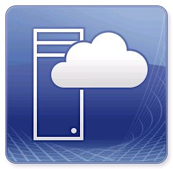

GLPI
GLPI (Gestionnaire Libre de Parc Informatique) est un système open source de gestion des inventaires informatiques, de suivi des incidents et de support technique. Découvrez de l'installation jusqu'à l'inventaire d'un PC de GLPI 11.
GLPI (Gestionnaire Libre de Parc Informatique) est un système open source de gestion des inventaires informatiques, de suivi des incidents et de support technique. Découvrez de l'installation jusqu'à l'inventaire d'un PC de GLPI 11.
Un guide fait sur mesure pour comprendre comment utiliser le site M2L.
Pour faire le site de M2L avec CakePHP, l'environnement a changé.
Au lieu d'un environnement avec MySQL, c'est PostgreSQL qui a été choisit pour ce projet.
L'utilisation de Wamp a été privilégié ainsi que PgAdmin4 pour visualiser la base de données
Le projet Maison des Ligues a été fait en Cake PHP dans l'optique de gérer les matchs et les équipes de l'association.
La documentation technique comprend :
-> Les migrations, les controller, les tables, et les templates des pages
-> Pages : Divisions, Catégories, Type de Championnats, Championnats, Club, Equipes, Matchs
-> Impression PDF de Championnat
Documentation complète du projet Blog App (une app web de blog) comprenant le détail des fonctionnalités :
-> Des articles et des tags
-> Des utilisateurs
-> Des commentaires
-> Sécurisation et connexion
Une VM spécifique était nécéssaire pour les TD/TP/AP des SLAM. La documentation comprend :
-> La création et configuration de la VM en partant d'un modèle
-> Gestion du disque pour l'augmentation de stockage
-> L'installation des logiciels d'environnement (WAMP, JDK, VSCode & Extensions)
-> Gestion de la RAM
Pour faciliter l'utilisation de plusieurs VM, la documentation détail comment créer la VM
depuis Console Virtual Machine Manager (CVMM) et pouvoir accéder rapidement à cette machine depuis le logiciel mRemoteNG.
Une explication briève de comment accéder aux ressources sur le réseau.
